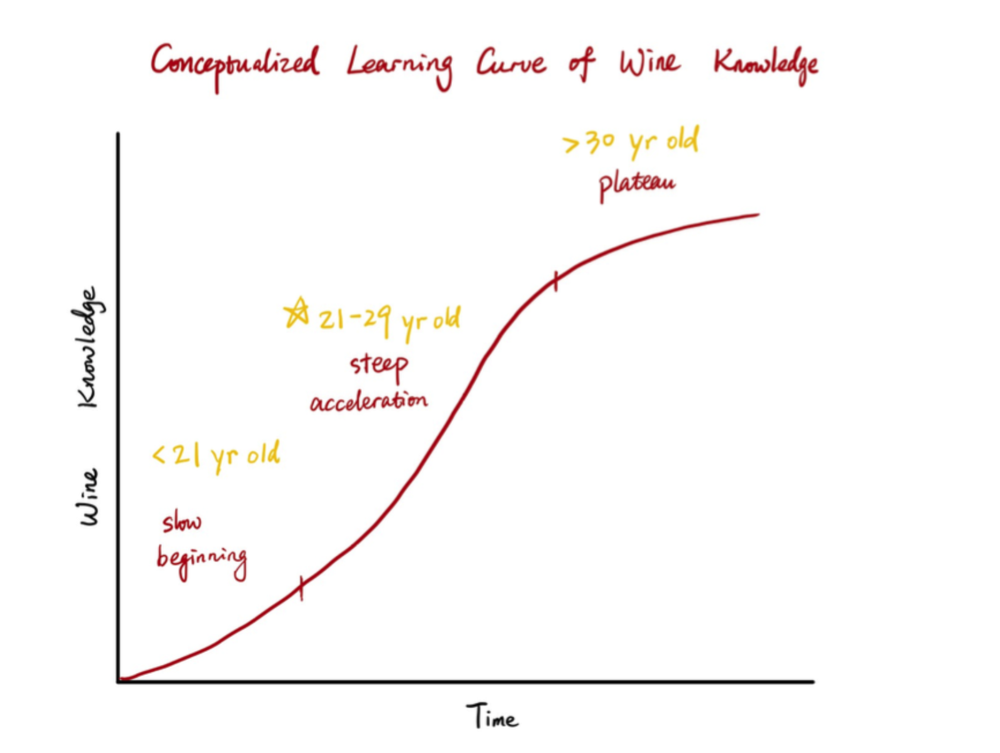

Background

For people in their 20s, they face a steep learning curve of wines, but they are also most curious to explore and learn.
We want to help them navigate the world of wines more easily, based on their preference of flavors to instantly associate.
In this process, the 20s can pick a few varieties of wines that are both affordable and high-rated, and when tasting by themselves,
they can know about the wines and feel what truly appeals to them.
Flavor Exploration
Choose the preferred wine type:

White Wine

Red Wine